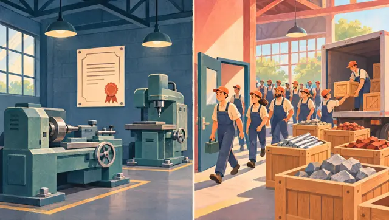

מה זה עלות, ומי קובע את המחיר
על מה המסעדה באמת מוותרת, ולמה היא לא קובעת את מחיר הארוחה.
מסעדה אחת ושתי שאלות
כל בוקר המסעדה שואלת שתי שאלות. כמה ארוחות להכין היום? והאם בכלל לפתוח? כדי לענות, צריך לדעת כמה עולה כל ארוחה. זה כל השיעור.
המסעדה מהסיכום, בארבעה מספרים. את מחיר הארוחה קובע השוק, לא המסעדה.
- 20₪ שכר דירה: עלות קבועה (FC)
- 80₪ לעובד: השכר (w)
- 2₪ חומרי גלם לארוחה (c)
- 70ארוחות לכל היותר, עם 6 עובדים
זו אותה מסעדה, עם אותה טבלה: כמה ארוחות היא מכינה עם כל מספר של עובדים. L = מספר העובדים. Q = מספר הארוחות.
| עובדים L | 0 | 1 | 2 | 3 | 4 | 5 | 6 |
|---|---|---|---|---|---|---|---|
| ארוחות Q | 0 | 15 | 29 | 42 | 54 | 63 | 70 |
השיעור במשפט אחד
כל עובד מוסיף פחות ארוחות, ולכן כל ארוחה נוספת עולה יותר, ולכן עקומת ההיצע עולה.
את החלק הראשון (״כל עובד מוסיף פחות״) למדנו בשיעור 5. השיעור הזה מוסיף את השאר.
בכלכלה עסק כזה נקרא פירמה. בכללים כתוב ״פירמה״, ובדוגמה ״המסעדה״. הסיכום המקורי כאן (PDF), עמודים 3 עד 5.
הנושא הבא, נושא 1עלות חשבונאית מול עלות כלכליתעלות חשבונאית מול עלות כלכלית
הכללעלות כלכלית היא כל מה שמוותרים עליו כדי לייצר עכשיו. כסף שכבר יצא ולא יחזור לא נספר.
- עלות חשבונאית היא הכסף שיוצא מהקופה (עלויות תזרימיות), ועוד פחת. פחת = חלק ממחיר הציוד שנרשם כהוצאה בכל שנה.
- עלות כלכלית היא העלות האלטרנטיבית של גורמי הייצור. כלומר, כמה כל גורם היה מקבל באפשרות הכי טובה שוויתרנו עליה. היא כוללת כסף שמשלמים עכשיו (שכר, חומרים, שכירות), וגם ויתורים שלא יוצאים מהקופה. למשל, המשכורת שהבעלים מוותרת עליה.
- עלות שקועה היא כסף שכבר יצא ולא יחזור. היא לא נכנסת לשום החלטה.
קניתם כרטיס להופעה ב־300 ₪, ואי אפשר להחזיר אותו. ביום ההופעה יורד גשם. ה־300 כבר שולמו, ולכן הם לא חלק מההחלטה. משווים רק את מה שעוד אפשר לשנות.
| שורה | רואה החשבון | הכלכלנית |
|---|---|---|
| פדיון | 400 | 400 |
| שכר, חומרים, דירה | 150 + 120 + 60 = 330 | 330 |
| משכורת הבעלים | 0 | 100 |
| התנור (50) | בלי פחת בשאלה | עלות שקועה |
| רווח | 70 | −30 |
התנור נקנה לפני שנתיים, ואי אפשר למכור אותו או להשכיר אותו. ברישומים המסעדה מרוויחה 70. אבל כשכירה, הבעלים הייתה מרוויחה 100. לכן הרווח הכלכלי שלילי: 70 − 100 = −30.
להעמקה: חמשת המושגים מהסיכום, והשקף של המרצה
- עלות חשבונאית. עלויות תזרימיות: כסף שיוצא מהכיס (out of pocket costs). ועוד פחת: מחלקים את מחיר הציוד על כמה שנים, ובכל שנה רושמים חלק ממנו כהוצאה. את כל זה רואים בדוח רווח והפסד.
- עלות כלכלית. העלות האלטרנטיבית של כל גורמי הייצור: כמה כל גורם ייצור היה מקבל בשימוש הטוב הבא שלו. בשקף: ״השכר שיש לשלם לגורם הייצור כדי להשאיר אותו בתעסוקתו הנוכחית״.
- עלות העבודה w. השכר שהעובד מקבל. בעיני כלכלן, זה גם מה שהעובד היה מרוויח בעבודה אחרת. במסעדה w = 80 ₪ לעובד.
- עלות ההון. ההון הוא המבנה, המטבח והציוד. כלכלן שואל בכמה אפשר היה להשכיר אותם למישהו אחר. זו העלות הכלכלית שלהם.
- עלות שקועה. הוצאה שכבר קרתה ואין דרך להחזיר אותה. בשקפים היא נקראת ״עלות אבודה״ (sunk cost).
| גורם ייצור | רואה חשבון | כלכלן |
|---|---|---|
| עבודה | השכר, w. | אותו דבר, w. מניחים שזה גם מה שהעובד היה מקבל בעבודה אחרת. |
| הון (מבנה, ציוד) | המחיר ששילמו בעבר (עלות היסטורית), מחולק על כמה שנים: פחת. | המחיר ששילמו בעבר הוא עלות שקועה. שואלים: בכמה אפשר להשכיר את ההון עכשיו? |
כלכלן לא מחלק את המחיר ששילמו בעבר על כמה שנים (פחת חשבונאי). הוא שואל כמה שווה השימוש בציוד עכשיו: בכמה אפשר להשכיר אותו.
גורם ייצור (בקיצור: גו״י) = כל דבר שמשתמשים בו כדי לייצר: עובד, מכונה, מבנה. בשקף 3 כתוב ״כלומר מהי העלות ה־???״. התשובה: העלות האלטרנטיבית של ההון.

עוד דוגמה: בעלת המסעדה. דנה מבשלת במסעדה של עצמה ולא משלמת לעצמה משכורת. כטבחית שכירה היא הייתה מרוויחה 12,000 ₪ בחודש. המסעדה מרוויחה 8,000 ₪ בחודש ברישומים. הרווח הכלכלי שלה הוא 8,000 − 12,000 = −4,000 ₪, ולכן עדיף לה להיות שכירה.
עוד מהעולם: ״כשל הקונקורד״. ממשלות בריטניה וצרפת המשיכו לממן את מטוס הקונקורד גם כשהיה ברור שלא ירוויח, בין השאר בטענה ש״כבר השקענו כל כך הרבה״. מאז זה שם לטעות הזו: ההחלטה צריכה לתלות רק במה שעוד אפשר להרוויח או לחסוך מעכשיו.
עלות חשבונאית = עלויות תזרימיות ופחת. עלות כלכלית = העלות האלטרנטיבית של גורמי הייצור.
עלות שקועה לא נכנסת להחלטה.
רווח כלכלי = פדיון פחות עלות כלכלית. כאן 400 − 330 − 100 = −30.
תחרות משוכללת: המחיר נתון, ולכן MR = P
הכללבתחרות משוכללת המחיר נתון, ולכן כל ארוחה נוספת מכניסה בדיוק P. בקיצור: MR = P.
- תחרות משוכללת היא שוק עם הרבה מוכרים קטנים של אותו מוצר.
- P הוא מחיר השוק. המסעדה לא יכולה לשנות אותו. לכן היא נוטלת מחיר. כלומר, ״לוקחת״ את המחיר כמו שהוא, ולא קובעת אותו.
- פדיון TR הוא כל הכסף מהמכירות: TR = P · Q.
- פדיון שולי MR הוא כמה כסף מכניסה עוד ארוחה אחת. כל ארוחה נמכרת באותו מחיר, ולכן MR = P.
- פירמות רבות, מוצר זהה
- אין תיאום מחירים
- כל פירמה עצמאית
- המחיר נתון
- שני גורמי ייצור, אחד קבוע בט״ק
- תפוקה שולית פוחתת
- שוק גורמי ייצור פתוח
בדקו את עצמכם: שאלה 4, ״מה אינו הנחה״.
בשוק יש 300 דוכנים עם אותן עגבניות. מי שיעלה את המחיר בשקל יישאר בלי קונים.
נניח P = 10. 42 ארוחות מכניסות 420, ו־54 ארוחות מכניסות 540. 12 הארוחות הנוספות הכניסו 120, כלומר 120 : 12 = 10 לכל ארוחה, בדיוק המחיר.
להעמקה: שבע ההנחות במלואן, וההערות על השקפים
- פירמות רבות, מוצר זהה. בענף יש הרבה פירמות קטנות, וכולן מוכרות אותו מוצר.
- תחרות בין הפירמות. אין תיאום מחירים. (קבוצה שמתאמת מחירים נקראת קרטל.)
- כל פירמה פועלת באופן עצמאי. היא לא תלויה בפירמות האחרות.
- המחיר P נתון. הפירמה לא יכולה להשפיע על מחיר המוצר. המחיר לא תלוי בכמות שהיא מייצרת.
- שני גורמי ייצור: הון ועבודה. בטווח הקצר (ט״ק) גורם אחד קבוע (בדרך כלל ההון, K), והשני משתנה (בדרך כלל העבודה, L). כל העובדים זהים זה לזה, וכך גם המכונות.
- תפוקה שולית פוחתת. מנקודה מסוימת, כל עובד נוסף מוסיף פחות לתפוקה. (תזכורת בשיעור 5)
- שוק גורמי הייצור פתוח. הפירמה קונה כל כמות במחירי השוק, ולכן גם השכר w נתון.
הסיכום והשקף ממוספרים אחרת. בשקף 4 ההנחות ממוספרות 1, 2 ו־4 עד 8, בלי 3. הנחה 4 בסיכום (המחיר נתון) היא הנחה 5 בשקף. הנחות 5 עד 7 בסיכום הן הנחות 6 עד 8 בשקף. בספרי לימוד מופיעות לפעמים גם ״מידע מלא״ ו״כניסה ויציאה חופשית לענף״.
שקף 10: ומה עם השוק כולו? ענף = כל הפירמות שמייצרות את אותו מוצר. אם כל המסעדות מבשלות יותר, המחיר בשוק יורד. אבל מסעדה אחת קטנה מדי כדי להזיז אותו.
זהירות: ״MR = P תמיד״. לא. רק בתחרות משוכללת, כשהפירמה נוטלת מחיר.
בתחרות משוכללת הפירמה נוטלת מחיר: P נתון.
TR = P · Q הוא קו ישר מהראשית.
לכן MR = P, ורק בתחרות משוכללת.
משפחת העלויות
כמה עולות כל הארוחות, כמה עולה ארוחה אחת בממוצע, וכמה עולה עוד ארוחה.
עלות קבועה, עלות משתנה ועלות כוללת
הכללעלות כוללת = עלות משתנה + עלות קבועה. TC = VC + FC.
- עלות קבועה FC לא תלויה בכמות. בטווח הקצר משלמים אותה גם כשלא מבשלים. במסעדה FC = 20, שכר הדירה.
- עלות משתנה VC גדלה עם הכמות: עובדים וחומרי גלם. במסעדה VC = 80 · L + 2 · Q, כלומר 80 כפול מספר העובדים, ועוד 2 כפול מספר הארוחות.
- אם לא מבשלים בכלל, VC = 0, ומשלמים רק את FC.
שכר הדירה זהה בכל חודש. חשבון החשמל גדל כשמבשלים יותר.
| Lעובדים | Qארוחות | FCקבועה | VCמשתנה | TCכוללת |
|---|---|---|---|---|
| 0 | 0 | 20 | 0 | 20 |
| 1 | 15 | 20 | 110 | 130 |
| 3 | 42 | 20 | 324 | 344 |
| 6 | 70 | 20 | 620 | 640 |
למשל 3 עובדים: VC = 240 + 84 = 324, ולכן TC = 324 + 20 = 344.
להעמקה: מה הופך עלות לקבועה
VC, עלות משתנה: תשלום על גורם ייצור שאפשר לשנות כבר בטווח הקצר, כמו עבודה וחומרי גלם. אפשר להימנע ממנה: אם לא מייצרים, VC = 0.
FC, עלות קבועה: תשלום על גורם ייצור שאי אפשר לשנות מהר, בדרך כלל ההון. התשלום קבוע בחוזה, למשל חוזה שכירות לשנה.
בגרף: FC היא קו אופקי. TC(0) = FC, ולכן FC קובעת איפה TC מתחילה. TC ו־VC ״מקבילות״: הפער ביניהן תמיד 20.

TC = VC + FC.
ב־Q = 0: VC = 0 ו־TC = FC.
הפער בין TC ל־VC הוא תמיד FC.
עלויות ממוצעות: AVC, AFC, ATC
הכללעלות ממוצעת היא העלות של ארוחה אחת. מחלקים במספר הארוחות Q, לא במספר העובדים.
- AVC (משתנה לארוחה) = VC : Q.
- AFC (קבועה לארוחה) = FC : Q.
- ATC (כוללת לארוחה) = TC : Q. תמיד ATC = AVC + AFC.
- AFC רק יורדת. אותם 20 ₪ מתחלקים על יותר ארוחות.
- ATC יורדת ואז עולה, בצורת U. היא תמיד מעל AVC, והן לא נפגשות.
- במסעדה AVC עולה כבר מהארוחה הראשונה, כי כל עובד מוסיף פחות. בגרף של המבחן גם AVC בצורת U (ראו ״הגרף של המבחן״).
תיקון לסיכוםליד AVC כתוב ״כמה בממוצע עולה לי גורם הייצור המשתנה״. מחלקים במספר הארוחות Q, לא במספר העובדים.
נסיעה במונית עולה 20 ₪, לא משנה כמה נוסעים. ארבעה נוסעים משלמים 5 ₪ כל אחד. ככה מתנהגת AFC: יורדת, אבל לא מגיעה ל־0.
| ארוחות Q | AVC משתנה לארוחה | AFC קבועה לארוחה | ATC כוללת לארוחה |
|---|---|---|---|
| 15 | 7.33 | 1.33 | 8.67 |
| 42 | 7.71 | 0.48 | 8.19 |
| 70 | 8.86 | 0.29 | 9.14 |
למשל ב־42 ארוחות, AVC = 324 : 42 ≈ 7.71, ATC = 344 : 42 ≈ 8.19.
להעמקה: מאיפה בא ATC = AVC + AFC, ולמה ATC בצורת U
כמו בסיכום, בשתי שורות.
ATC = TC : Q = (VC + FC) : Q
(VC : Q) + (FC : Q) = AVC + AFC
במסעדה כל עובד מוסיף פחות ארוחות (MP = 15, 14, 13 וכן הלאה), ולכן AVC עולה כבר מההתחלה. בהתחלה AFC יורדת מהר, ולכן ATC יורדת. אחר כך העלייה של AVC חזקה יותר, ו־ATC עולה. המינימום של ATC הוא ב־42 ארוחות.
AVC = (w : AP) + c. AP היא התפוקה הממוצעת (ארוחות לעובד). במסעדה AP הכי גבוהה עם עובד אחד (15 ארוחות), ולכן שם AVC הכי נמוכה, (80 : 15) + 2 ≈ 7.33.
AVC = VC : Q, AFC = FC : Q, ATC = TC : Q.
ATC = AVC + AFC. מחלקים ב־Q.
AFC תמיד יורדת, ולא מגיעה ל־0. הפער בין ATC ל־AVC הוא AFC.
מה זה MC, העלות השולית
הכללMC (עלות שולית) = כמה עוד עולה לנו להכין עוד ארוחה.
- בטבלה, עובד נוסף מוסיף כמה ארוחות בבת אחת. לכן מחלקים את העלות שנוספה במספר הארוחות שנוספו.
- MC = ΔTC : ΔQ
- Δ (דלתא) פירושו ״השינוי ב־״.
- FC לא משתנה, ולכן לא משפיעה על MC.
ΔTC = 448 − 344 = 104
ΔQ = 54 − 42 = 12
MC = 104 : 12 ≈ 8.67
בשורת העובד הרביעי, MC ≈ 8.67 היא העלות של כל אחת מ־12 הארוחות שהוא הוסיף.
תיקון לסיכוםליד MC כתוב TC₀ = VC₀ − FC. צריך להיות פלוס, TC₀ = VC₀ + FC.
להעמקה: ההוכחה מהסיכום, למה FC מתקזזת
- MC = ΔTC : ΔQ, כאשר ΔTC = TC₁ − TC₀ ו־ΔQ = Q₁ − Q₀.
- TC₀ = VC₀ + FC ו־TC₁ = VC₁ + FC.
- לכן TC₁ − TC₀ = VC₁ − VC₀. FC מתקזזת, ו־MC = ΔVC : ΔQ.
בדיקה במסעדה: ΔVC = 428 − 324 = 104, בדיוק כמו ΔTC.
MC = ΔTC : ΔQ. FC לא משפיעה על MC.
הקיצור MC = (w : MP) + c
הכללהעובד הנוסף עולה w ומוסיף MP ארוחות. לכל ארוחה שלו יש w : MP שכר, ועוד c חומרי גלם.
- במסעדה MC = (80 : MP) + 2. בשקפים אין חומרי גלם, ולכן MC = w : MP.
- כל עובד מוסיף פחות ארוחות (תפ״ש פוחתת). לכן כל ארוחה נוספת עולה יותר.
- העובד הראשון מוסיף 15 ארוחות, ו־MC = (80 : 15) + 2 ≈ 7.33. העובד השישי מוסיף רק 7, ו־MC ≈ 13.43.
המספרים: הטבלה לכל עובד
| Lעובדים | Qארוחות | MPתפ״ש | 80 : MPשכר לארוחה | MC = (80 : MP) + 2עלות שולית |
|---|---|---|---|---|
| 1 | 15 | 15 | 5.33 | 7.33 |
| 2 | 29 | 14 | 5.71 | 7.71 |
| 3 | 42 | 13 | 6.15 | 8.15 |
| 4 | 54 | 12 | 6.67 | 8.67 |
| 5 | 63 | 9 | 8.89 | 10.89 |
| 6 | 70 | 7 | 11.43 | 13.43 |

להעמקה: ההוכחה בארבעה צעדים, ומה מזיז את MC
מה מזיז את MC?
- w עולה: MC עולה בכל כמות.
- c עולה: MC עולה בדיוק באותו סכום, בכל כמות.
- MP עולה (ניסיון, ציוד טוב יותר): MC יורדת.
- FC עולה: MC לא זזה.
- העובד האחרון מוסיף MP ארוחות, ועולה w.
- השכר שלו מתחלק על הארוחות שהוסיף, ולכן w : MP לכל ארוחה.
- כל ארוחה עולה עוד c בחומרי גלם.
- ביחד MC = (w : MP) + c. זו ״אחת המשוואות החשובות בקורס״, כמו שכתוב בשקף.
למשל העובד הרביעי, (80 : 12) + 2 ≈ 6.67 + 2 = 8.67. בדיוק כמו ΔTC : ΔQ בנושא 5א.
למה FC לא מופיעה בנוסחה? כי MC מודדת רק שינוי בעלות, ו־FC לא משתנה. אם שכר הדירה יעלה מ־20 ל־50, MC לא תזוז. ישתנו רק AFC, ATC ונקודת האיזון.
MC = (w : MP) + c. MP יורדת, ולכן MC עולה.
שולית וממוצעת
הכללכש־MC מתחת לממוצעת, הממוצעת יורדת. כש־MC מעליה, הממוצעת עולה.
הממוצע שלכם 80. מבחן של 95 מעלה אותו. מבחן של 70 מוריד אותו.
לכן כשהממוצעת בצורת U, MC חותכת אותה מלמטה, בדיוק בנקודה הנמוכה שלה.
במסעדה ATC בצורת U. לפני 42 ארוחות MC = 8.15, מתחת ל־8.19. אחרי 42 MC = 8.67, מעל. לכן ATC הכי נמוכה ב־42.
AVC במסעדה עולה מההתחלה. לכן MC מעליה בכל שלב, ואין חיתוך.
בשורה הראשונה של כל טבלה MC = AVC, כי שתיהן מחלקות את אותו VC באותה כמות. זה לא סימן לנקודת סגירה. בדוגמת הקסדות גם בשורה הראשונה MC = AVC = 20, אבל נקודת הסגירה שם היא 15.
ניסוי רשות: כל העקומות בגרף אחד
נסו: הקישו על 15 ארוחות. כאן AVC הכי נמוכה (נקודת סגירה). הקישו על 42. כאן ATC הכי נמוכה (נקודת איזון), ו־MC עוברת מתחתיה למעליה.
הניסוי צריך JavaScript. את אותן עקומות רואים בגרף של נושא 4, ואת המספרים בטבלה של נושא 6.
מה אמורים לראות
MC עולה כל הזמן. AVC הכי נמוכה ב־15 ארוחות (7.33). ATC יורדת עד 42 ארוחות (8.19) ואז עולה. הפער בין ATC ל־AVC הוא AFC, והוא קטן. הקווים רק מחברים בין הנקודות של הטבלה.
כש־AVC ו־ATC בצורת U, MC חותכת קודם את AVC ואחר כך את ATC, כל אחת בנקודה הנמוכה שלה, מלמטה.
בטבלה: MC שלפני הנקודה הנמוכה קטנה מהממוצעת, ו־MC שאחריה גדולה ממנה.
הגרף של המבחן
הכללבשקפים ובמבחן העקומות נראות אחרת מהמסעדה. MC יורדת ואז עולה, וגם AVC בצורת U.
- A הנקודה הנמוכה של MC.
- B MC חותכת את AVC בנקודה הנמוכה שלה. זו נקודת הסגירה.
- C MC חותכת את ATC בנקודה הנמוכה שלה. זו נקודת האיזון.
- עקומת ההיצע = MC מ־B ומעלה. מתחת ל־B, הכמות 0.
- קו מחיר נמוך יכול לחתוך את MC פעמיים. בוחרים את החיתוך בחלק העולה.
- בדוגמת הקסדות מהמצגת: סגירה 15, איזון 20. במחיר 24 מייצרים 43 קסדות, ורווח 152. לדוגמה המלאה, עם סרטון
טבלת העלויות של המסעדה
הכללכל עמודה בטבלה נבנית מהעמודות שלפניה.
סדר המילוי: MP, FC, VC, TC. אחר כך מחלקים ב־Q ומקבלים AVC, AFC ו־ATC. בסוף MC.
הנתונים מהסיכום (עמוד 5). FC = 20 (״קבוע!״), 80 ₪ לעובד, 2 ₪ לארוחה. הארוחות לפי מספר העובדים, ממסעדה 1 משיעור 5.
- נתון
- מחשבים באותה שורה
- מחשבים בין שתי שורות
נסו בעצמכם: הסתירו את העמודות ומלאו אחת אחרי השנייה
נסו: לחצו ״מהתחלה״. לפני כל לחיצה על ״העמודה הבאה״, חשבו את התא בשורה שבחרתם.
להציג עמודה אחת
הטבלה המלאה
| Lעובדים(נתון) | Qארוחות(נתון) | MPתפוקה שולית(בין שתי שורות) | FCקבועה(נתון) | VCמשתנה(באותה שורה) | TCכוללת(באותה שורה) | AVCמשתנה לארוחה(באותה שורה) | AFCקבועה לארוחה(באותה שורה) | ATCכוללת לארוחה(באותה שורה) | MCשולית(בין שתי שורות) |
|---|---|---|---|---|---|---|---|---|---|
| 0 | 0 | — | 20 | 0 | 20 | — | — | — | — |
| 1 | 15 | 15 | 20 | 110 | 130 | 7.33 | 1.33 | 8.67 | 7.33 |
| 2 | 29 | 14 | 20 | 218 | 238 | 7.52 | 0.69 | 8.21 | 7.71 |
| 3 | 42 | 13 | 20 | 324 | 344 | 7.71 | 0.48 | 8.19 | 8.15 |
| 4 | 54 | 12 | 20 | 428 | 448 | 7.93 | 0.37 | 8.30 | 8.67 |
| 5 | 63 | 9 | 20 | 526 | 546 | 8.35 | 0.32 | 8.67 | 10.89 |
| 6 | 70 | 7 | 20 | 620 | 640 | 8.86 | 0.29 | 9.14 | 13.43 |
| Lעובדים(נתון) | Qארוחות(נתון) | MPתפוקה שולית(בין שתי שורות) | VCמשתנה(באותה שורה) | TCכוללת(באותה שורה) |
|---|---|---|---|---|
| 0 | 0 | — | 0 | 20 |
| 1 | 15 | 15 | 110 | 130 |
| 2 | 29 | 14 | 218 | 238 |
| 3 | 42 | 13 | 324 | 344 |
| 4 | 54 | 12 | 428 | 448 |
| 5 | 63 | 9 | 526 | 546 |
| 6 | 70 | 7 | 620 | 640 |
| Qארוחות(נתון) | AVCמשתנה לארוחה(באותה שורה) | AFCקבועה לארוחה(באותה שורה) | ATCכוללת לארוחה(באותה שורה) | MCשולית(בין שתי שורות) |
|---|---|---|---|---|
| 0 | — | — | — | — |
| 15 | 7.33 | 1.33 | 8.67 | 7.33 |
| 29 | 7.52 | 0.69 | 8.21 | 7.71 |
| 42 | 7.71 | 0.48 | 8.19 | 8.15 |
| 54 | 7.93 | 0.37 | 8.30 | 8.67 |
| 63 | 8.35 | 0.32 | 8.67 | 10.89 |
| 70 | 8.86 | 0.29 | 9.14 | 13.43 |
שורה אחת: עובד אחד, 15 ארוחות
- MP תפוקה שולית
- 15 − 0 = 15
- FC קבועה
- 20
- VC משתנה
- 80 · 1 + 2 · 15 = 110
- TC כוללת
- 110 + 20 = 130
- AVC משתנה לארוחה
- 110 : 15 ≈ 7.33
- AFC קבועה לארוחה
- 20 : 15 ≈ 1.33
- ATC כוללת לארוחה
- 130 : 15 ≈ 8.67
- MC שולית
- (130 − 20) : 15 ≈ 7.33
שורה אחת: 2 עובדים, 29 ארוחות
- MP תפוקה שולית
- 29 − 15 = 14
- FC קבועה
- 20
- VC משתנה
- 80 · 2 + 2 · 29 = 218
- TC כוללת
- 218 + 20 = 238
- AVC משתנה לארוחה
- 218 : 29 ≈ 7.52
- AFC קבועה לארוחה
- 20 : 29 ≈ 0.69
- ATC כוללת לארוחה
- 238 : 29 ≈ 8.21
- MC שולית
- (238 − 130) : 14 ≈ 7.71
שורה אחת: 3 עובדים, 42 ארוחות
- MP תפוקה שולית
- 42 − 29 = 13
- FC קבועה
- 20
- VC משתנה
- 80 · 3 + 2 · 42 = 324
- TC כוללת
- 324 + 20 = 344
- AVC משתנה לארוחה
- 324 : 42 ≈ 7.71
- AFC קבועה לארוחה
- 20 : 42 ≈ 0.48
- ATC כוללת לארוחה
- 344 : 42 ≈ 8.19
- MC שולית
- (344 − 238) : 13 ≈ 8.15
שורה אחת: 4 עובדים, 54 ארוחות
- MP תפוקה שולית
- 54 − 42 = 12
- FC קבועה
- 20
- VC משתנה
- 80 · 4 + 2 · 54 = 428
- TC כוללת
- 428 + 20 = 448
- AVC משתנה לארוחה
- 428 : 54 ≈ 7.93
- AFC קבועה לארוחה
- 20 : 54 ≈ 0.37
- ATC כוללת לארוחה
- 448 : 54 ≈ 8.30
- MC שולית
- (448 − 344) : 12 ≈ 8.67
שורה אחת: 5 עובדים, 63 ארוחות
- MP תפוקה שולית
- 63 − 54 = 9
- FC קבועה
- 20
- VC משתנה
- 80 · 5 + 2 · 63 = 526
- TC כוללת
- 526 + 20 = 546
- AVC משתנה לארוחה
- 526 : 63 ≈ 8.35
- AFC קבועה לארוחה
- 20 : 63 ≈ 0.32
- ATC כוללת לארוחה
- 546 : 63 ≈ 8.67
- MC שולית
- (546 − 448) : 9 ≈ 10.89
שורה אחת: 6 עובדים, 70 ארוחות
- MP תפוקה שולית
- 70 − 63 = 7
- FC קבועה
- 20
- VC משתנה
- 80 · 6 + 2 · 70 = 620
- TC כוללת
- 620 + 20 = 640
- AVC משתנה לארוחה
- 620 : 70 ≈ 8.86
- AFC קבועה לארוחה
- 20 : 70 ≈ 0.29
- ATC כוללת לארוחה
- 640 : 70 ≈ 9.14
- MC שולית
- (640 − 546) : 7 ≈ 13.43
הניסוי צריך JavaScript. בלעדיו הטבלה מוצגת במלואה.
ה־MC בשורה של 3 עובדים היא העלות של כל אחת מ־13 הארוחות שהעובד השלישי הוסיף. בשורה של 0 עובדים אין ממוצעים, כי אי אפשר לחלק ב־0.
תיקון לסיכוםבשורה של 2 עובדים כתוב VC = 238. הנכון 160 + 58 = 218, ולכן TC = 238 (ולא 258). בטבלה שני התאים מסומנים במסגרת.
VC = w · L + c · Q, TC = VC + FC. ממוצעות: חלקי Q.
MC = ΔTC : ΔQ, ונכתבת בשורה של העובד הנוסף.
בדיקה: ATC = AVC + AFC ו־MC = (w : MP) + c.
כמה לייצר, והאם לייצר בכלל
בסיכום אין מחיר, ולכן כאן מניחים מחירים ומסמנים אותם ״נניח״.
כמה לייצר? עד ש־P = MC
הכללמוסיפים ארוחות כל עוד הארוחה הבאה עולה לא יותר מהמחיר.
- ארוחה נוספת מכניסה P ועולה MC.
- אם MC ≤ P, היא מוסיפה רווח, או לפחות לא מורידה אותו. מכינים אותה.
- אם MC > P, היא מורידה את הרווח. עוצרים.
- הכמות הכי טובה נקראת Q* (״Q כוכבית״). הרווח הוא π = TR − TC, ו־π (פאי) = רווח.
כוס לימונדה נמכרת ב־5 ₪. כוס שעולה 3 ₪ מכינים. כוס שעולה 7 ₪ לא מכינים.
| Lעובדים | Qארוחות | MCעלות כל ארוחה נוספת | P − MCרווח מכל ארוחה נוספת | πרווח |
|---|---|---|---|---|
| 3 | 42 | 8.15 | 1.85כדאי | 76 |
| 4 | 54 | 8.67 | 1.33כדאי | 92 |
| 5 | 63 | 10.89 | −0.89לא כדאי | 84 |
לכן Q* = 54 (4 עובדים), ו־π = 540 − 448 = 92. זה הרווח הכי גדול, הפסגה של הגבעה.
במסעדה MC עולה מהעובד הראשון, ולכן פשוט מוסיפים עובדים כל עוד MC ≤ P. אבל כש־MC קודם יורדת (כמו בקסדות), לא עוצרים בהתחלה. בקסדות, במחיר 18, הקסדות הראשונות עולות 20, ובכל זאת מייצרים 32.
להעמקה: הטבלה המלאה, והתנאי ההכרחי והמספיק
| Lעובדים | Qארוחות | TCכוללת | MCשולית | TR = P·Qפדיון | MR = Pפדיון שולי | πרווח | Mπ = P − MCרווח שולי |
|---|---|---|---|---|---|---|---|
| 0 | 0 | 20 | — | 0 | — | −20 | — |
| 1 | 15 | 130 | 7.33 | 150 | 10 | 20 | 2.67 |
| 2 | 29 | 238 | 7.71 | 290 | 10 | 52 | 2.29 |
| 3 | 42 | 344 | 8.15 | 420 | 10 | 76 | 1.85 |
| 4 | 54 | 448 | 8.67 | 540 | 10 | 92 | 1.33 |
| 5 | 63 | 546 | 10.89 | 630 | 10 | 84 | −0.89 |
| 6 | 70 | 640 | 13.43 | 700 | 10 | 60 | −3.43 |
רווח שולי Mπ = P − MC: כדאי להוסיף כל עוד הוא לא שלילי. זו העמודה מהטבלה בשקפים.
״הכרחי״ = חייב להתקיים. ״מספיק״ = אם הוא מתקיים, מצאנו את התשובה. כש־MC יורדת ואז עולה, קו מחיר יכול לחתוך אותה פעמיים. החיתוך בחלק היורד הוא דווקא נקודה של רווח מינימלי: מיד אחריו כל יחידה עולה פחות מהמחיר. לכן התנאי המספיק הוא ש־MC עולה בנקודה. ראו את החיתוך הכפול בקסדות.
ההגדרות TR ו־π כתובות בסוף עמוד 3 בסיכום. MR = P בא מהשקפים.
MR = P. תנאי הכרחי למקסימום רווח: P = MC. תנאי מספיק (כמו בשקף): MC עולה בנקודה הזו.
ובנוסף, כדי לייצר בכלל בט״ק, P ≥ AVC. אחרת Q* = 0.
בטבלה: בחלק שבו MC עולה, לוקחים את העובד האחרון שה־MC שלו לא גבוהה מ־P.
π = TR − TC.
לייצר בכלל? נקודת סגירה ונקודת איזון
הכללבט״ק מייצרים אם המחיר לא נמוך מ־min AVC (נקודת סגירה). מרוויחים רק כשהמחיר מעל min ATC (נקודת איזון). במסעדה, 7.33 ו־8.19.
- ט״ק = טווח קצר. את FC משלמים גם אם סוגרים.
- ט״א = טווח ארוך. אפשר לבטל הכול ולצאת מהענף (כל הפירמות שמוכרות אותו מוצר).
נקודת הסגירה = min AVC
הנקודה הנמוכה של AVC. במסעדה 7.33, ב־15 ארוחות. מתחת לה המחיר לא מכסה אפילו את האוכל ואת העובדים. סוגרים, ומפסידים רק את FC.
נקודת האיזון = min ATC
הנקודה הנמוכה של ATC. במסעדה 8.19, ב־42 ארוחות. בה הפדיון שווה בדיוק לכל העלויות, והרווח 0.
רווח 0 בנקודת האיזון לא אומר ״לא מרוויחים כלום״. הבעלים מרוויחה בדיוק כמו באפשרות הכי טובה שלה, ולכן אין לה סיבה לצאת.
ביניהן: מזעור הפסדים
- בין שתי הנקודות מפסידים, אבל פחות מ־FC. לכן פירמה שמפסידה לא תמיד נסגרת. למה לא לסגור? את שכר הדירה משלמים בכל מקרה. אם המכירות מכסות את VC ועוד קצת, ה״קצת״ מקטין את ההפסד.
- בדיוק בנקודת הסגירה אדישים בין לייצר לסגור. בשני המקרים ההפסד = FC.
- אם המחיר יישאר בין נקודת הסגירה לנקודת האיזון, בט״א יוצאים מהענף.
- בט״ק FC מתנהגת כמו עלות שקועה: משלמים אותה גם אם סוגרים, ולכן היא לא משנה את ההחלטה לסגור. בט״א, כשהחוזה נגמר, אפשר להימנע ממנה.
סוגרים: דוכן גלידה בחוף נסגר בחורף. ההכנסה לא מכסה אפילו את המוכר ואת החשמל (P < AVC).
פתוחים בהפסד: מלון באילת נשאר פתוח בחורף, במחירים נמוכים. חדר נוסף עולה רק ניקיון וחשמל, והמחיר מכסה את זה (P ≥ AVC). את הבניין הוא משלם בכל מקרה.
המפה: כל ההחלטה בגרף אחד
- שלב 1. שלוש העקומות: AVC (משתנה לארוחה), ATC (כוללת לארוחה) ו־MC (שולית).
- שלב 2. שתי נקודות. S היא הנקודה הנמוכה של AVC, נקודת הסגירה (7.33). E היא הנקודה הנמוכה של ATC, נקודת האיזון (8.19).
- שלב 3. שלושה פסים. אדום מתחת ל־7.33: סוגרים. צהוב בין 7.33 ל־8.19: מייצרים בהפסד. ירוק מעל 8.19: מרוויחים.
- שלב 4. שלושה מחירים: 7, 8 ו־10. בכל מחיר מכינים עד P = MC. הקו העבה הוא עקומת ההיצע: 0 מתחת ל־7.33, ומשם MC העולה.
הציר האנכי מתחיל ב־6.5, כדי שההבדלים הקטנים ייראו. MC ממשיכה למעלה, עד 13.43.
מחיר 7. סוגרים. Q* = 0. הפסד 20 (שכר הדירה). בט״א: יוצאים מהענף.
מחיר 8. מייצרים 29 ארוחות. TR = 232, TC = 238. הפסד 6, פחות מ־20. בט״א: אם המחיר יישאר כזה, יוצאים מהענף.
מחיר 10. מייצרים 54 ארוחות. TR = 540, TC = 448. רווח 92. בט״א: נשארים.
במחיר 8 ההפסד הוא 6, ולא 20. ההפרש TR − VC = 232 − 218 = 14 ₪ משלם חלק משכר הדירה.
בדיוק 7.33: אדישים בין לייצר לסגור. בדיוק 8.19: רווח 0.
אם סוגרים, ההפסד הוא FC = 20 ₪, שכר הדירה. במחיר 8 מייצרים ומפסידים רק 6.
איך מציירים במבחן: מלבנים
- TR = P · Q*, כל המלבן עד קו המחיר.
- TVC = AVC · Q*, מתחת ל־AVC.
- TFC = AFC · Q*, בין AVC ל־ATC.
- π = (P − ATC) · Q*, בין ATC למחיר.
להעמקה: מאיפה התנאים באים, ועוד ציורים
P·Q − VC > 0
P·Q > VC
מחלקים את שני הצדדים ב־Q.
P > AVC
π = P·Q − TC > 0
P·Q > TC
מחלקים את שני הצדדים ב־Q.
P > ATC
מילה על מונחים. בשקפים P·q − VC נקרא ״הרווח בט״ק״, וגם עודף היצרן לט״ק. זה לא הרווח האמיתי. הרווח האמיתי הוא π = P·q − VC − FC. בשקפים כותבים TVC ו־TFC, וזה אותו דבר כמו VC ו־FC.
שלושה מחירים, שלושה ציורים
לא מכינים ארוחות, Q* = 0. ההפסד הוא FC = 20.
מכינים 29 ארוחות. TR = 232, TC = 238, ולכן π = −6.
מכינים 54 ארוחות. TR = 540, TC = 448, ולכן π = 92.

עוד מהעולם: בארות נפט. באביב 2020 מחיר הנפט צנח, וחברות נפט בארה״ב סגרו זמנית חלק מהבארות. המחיר לא כיסה אפילו את העלות השוטפת של השאיבה. את הציוד ואת הזכויות בשטח הן המשיכו להחזיק. זו סגירה בט״ק, לא יציאה מהענף.
ט״ק: מייצרים אם P ≥ min AVC (נקודת סגירה). אחרת Q = 0, וההפסד = FC.
ט״א: נשארים אם P ≥ min ATC (נקודת איזון).
ביניהן: מייצרים ומפסידים פחות מ־FC (מזעור הפסדים).
בציור: TR = P · Q*, TVC = AVC · Q*, TFC = AFC · Q*, π = (P − ATC) · Q*.
ניסוי: המחיר קובע את הכמות
הכללמכינים עד P = MC, ורק אם המחיר לא נמוך מ־min AVC.
נסו: בחרו 7, אחר כך 8, אחר כך 10. בכל פעם כתבו לעצמכם כמה ארוחות ומה הרווח.
עוד מספרים
בדקו את עצמכם: מה אמורים לראות
במחיר 7: 0 ארוחות, הפסד 20. במחיר 8: 29 ארוחות, הפסד 6. במחיר 10: 54 ארוחות, רווח 92. בגרף, הארוחות שעולות פחות מהמחיר צבועות בירוק.
הניסוי צריך JavaScript. את שלושת המחירים רואים במפה ובכרטיסים של נושא 8.
עקומת ההיצע של המסעדה, ומה מזיז אותה
הכללעקומת ההיצע של הפירמה בט״ק היא החלק העולה של MC, מעל min AVC. במחיר נמוך יותר הכמות 0.
- עקומת היצע עונה על שאלה אחת: בכל מחיר, כמה ארוחות נכין? כמו מחירון הפוך: ״תגידו לי מחיר, ואגיד לכם כמה אכין״.
- במחיר נמוך מ־7.33 הכמות 0.
- מעל 7.33 מכינים עד P = MC. לכן ההיצע הוא החלק העולה של MC, מעל נקודת הסגירה.
- MC עולה, ולכן גם ההיצע עולה: מחיר גבוה יותר, יותר ארוחות.
| מחיר | 7 | 8 | 10 | 12 |
|---|---|---|---|---|
| ארוחות Q* | 0 | 29 | 54 | 63 |
מה מזיז את העקומה?
- המחיר משתנה: זזים לאורך העקומה. העקומה עצמה לא זזה.
- השכר w או חומרי הגלם c עולים: MC עולה, והעקומה זזה למעלה ושמאלה (באותו מחיר, פחות ארוחות). גם נקודת הסגירה עולה.
- MP עולה, למשל בזכות ניסיון: MC יורדת, והעקומה זזה למטה וימינה (באותו מחיר, יותר ארוחות).
- שכר הדירה FC עולה: MC לא משתנה, והעקומה לא זזה. אבל הרווח יורד, ונקודת האיזון עולה.
- מס ליחידה מתנהג כמו c ומזיז את העקומה. אגרה קבועה מתנהגת כמו FC ולא מזיזה אותה.
דוגמה: אם השכר עולה ל־100, במחיר 10 מכינים רק 42 ארוחות. נקודת הסגירה עולה מ־7.33 ל־8.67.
איך בונים לוח היצע מטבלה
- רושמים את MC של כל עובד.
- מתחת לנקודת הסגירה: 0 ארוחות.
- בכל טווח מחירים: הכמות של העובד האחרון שה־MC שלו לא גבוהה מהמחיר (בחלק שבו MC עולה).
המספרים מעוגלים. הגבול המדויק של הסגירה הוא 7⅓, ושל האיזון 344 : 42 ≈ 8.19.
להעמקה: לוח ההיצע המלא, וההגדרה מהשקף
| מחיר | ארוחות Q* | למה |
|---|---|---|
| מתחת ל־7.33 | 0 | המחיר נמוך מ־min AVC: סוגרים. |
| בין 7.33 ל־7.71 | 15 | הארוחות 1 עד 15 (של העובד הראשון) עולות 7.33 כל אחת, לא יותר מהמחיר. הארוחות הבאות עולות 7.71, יותר מהמחיר. |
| בין 7.71 ל־8.15 | 29 | הארוחות 16 עד 29 (של העובד השני) עולות 7.71 כל אחת, לא יותר מהמחיר. הארוחות הבאות עולות 8.15, יותר מהמחיר. |
| בין 8.15 ל־8.67 | 42 | הארוחות 30 עד 42 (של העובד השלישי) עולות 8.15 כל אחת, לא יותר מהמחיר. הארוחות הבאות עולות 8.67, יותר מהמחיר. |
| בין 8.67 ל־10.89 | 54 | הארוחות 43 עד 54 (של העובד הרביעי) עולות 8.67 כל אחת, לא יותר מהמחיר. הארוחות הבאות עולות 10.89, יותר מהמחיר. |
| בין 10.89 ל־13.43 | 63 | הארוחות 55 עד 63 (של העובד החמישי) עולות 10.89 כל אחת, לא יותר מהמחיר. הארוחות הבאות עולות 13.43, יותר מהמחיר. |
| 13.43 ומעלה | 70 | הארוחות 64 עד 70 (של העובד השישי) עולות 13.43 כל אחת, לא יותר מהמחיר. בטבלה אין עובד שביעי. |
במחיר שבדיוק שווה ל־MC של עובד, המסעדה אדישה בין שתי הכמויות, כי הרווח זהה. מקובל לבחור את הגדולה, כמו בשקפים.
ההגדרה המלאה מהשקף. עקומת ההיצע של הפירמה בטווח הקצר אומרת כמה הפירמה תייצר בכל מחיר. הפירמה רוצה רווח מקסימלי ומקבלת את המחיר כנתון. לכן העקומה היא החלק העולה של MC, מעל המינימום של AVC. במחיר נמוך מהמינימום הזה הפירמה מפסיקה לייצר.
ניסוי רשות: ההיצע נבנה מהמחירים שבחרתם
נסו: כל מחיר שבחרתם בניסוי של נושא 8 הוא נקודה כאן. לחצו ״ציירו את כל העקומה״, וראו מדרגות שמתחילות ב־7.33.
הניסוי צריך JavaScript. את ההיצע רואים בגרף ובטבלה שמעל.
ניסוי רשות: מזיזים את w, את c ואת MP
נסו: לחצו ״השכר עולה ל־100״. העקומה עולה, ובמחיר 10 מכינים 42 במקום 54.
מה אמורים לראות
שכר 100: העקומה זזה למעלה ושמאלה, סגירה ב־8.67, ובמחיר 10 מכינים 42. חומרי גלם 3 ₪: כל MC עולה ב־1, וסגירה ב־8.33. MP פי 1.2: העקומה זזה למטה וימינה.
הניסוי צריך JavaScript. הכללים עצמם כתובים מעל.
היצע הפירמה בט״ק = MC העולה מעל min AVC. מתחת, Q = 0.
מחיר משתנה: תזוזה על העקומה. w או c עולים: למעלה ושמאלה. MP עולה: למטה וימינה.
FC לא מזיזה את עקומת ההיצע, אבל מורידה את הרווח ומעלה את נקודת האיזון.
עכשיו 10 שאלות החובה, ואחריהן דף הסיכום. לפני המבחן כדאי גם לראות את דוגמת הקסדות, עם הסרטון.
דוגמת הקסדות מהמצגת
המבחן עשוי להשתמש במספרים ובגרפים מהשקפים. כאן הדוגמה של המרצה, בסרטון קצר ובטבלה.
מפעל הקסדות: הדוגמה מהשקפים
סרטון: דוגמת הקסדות מהמצגת
2:26 דקות · קריינות וכתוביות בעבריתתמליל הסרטון
בסרטון הזה נבין כמה עולה לייצר, וכמה כדאי לייצר.
את העלות הקבועה משלמים גם כשלא מייצרים כלום: שכירות, מכונות, חוזים.
והעלות המשתנה גדלה עם הייצור: עוד עובדים, עוד חומרים.
במפעל הקסדות, העלות הקבועה היא 160 ₪, וכל עובד עולה 120 ₪.
מחלקים כל עלות בכמות, ומקבלים עלויות ממוצעות. העלות הקבועה הממוצעת תמיד יורדת, כי היא מתחלקת על יותר קסדות.
העלות השולית (MC) היא כמה עולה הקסדה הבאה.
והיא קשורה לתפוקה השולית: העלות השולית שווה לשכר חלקי התפוקה השולית.
העובד השלישי מוסיף 10 קסדות, אז כל קסדה שלו עולה 12 ₪. העובד השביעי מוסיף רק 4, אז כל קסדה שלו עולה 30 ₪.
העלות השולית חותכת את שתי העלויות הממוצעות בדיוק בנקודת המינימום שלהן: 15 ו־20.
ועכשיו, להחלטה. בתחרות משוכללת, כל קסדה נוספת מכניסה בדיוק את המחיר.
לכן מייצרים כל עוד המחיר גבוה מהעלות השולית, ועוצרים כשהמחיר שווה לה, בחלק העולה של העקומה.
במחיר 24, מייצרים 43 קסדות, והרווח הוא 152 ₪.
המינימום של העלות המשתנה הממוצעת, 15, הוא נקודת הסגירה. במחיר נמוך ממנו, סוגרים.
בין 15 ל־20 מפסידים, אבל ממשיכים לייצר, כי ההפסד קטן מהעלות הקבועה שמפסידים כשסוגרים.
ומעל 20, נקודת האיזון, מרוויחים באמת, גם בטווח הארוך.
ולכן, עקומת ההיצע של הפירמה היא העלות השולית העולה, מעל נקודת הסגירה.
באתר מחכים לכם גרפים שאפשר להזיז, טבלאות עלויות ושאלות מבחן פתורות. בהצלחה!
הכללאותם כללים בדיוק, עם מספרים אחרים: FC = 160, w = 120, ואין חומרי גלם (c = 0). לכן MC = w : MP, הנוסחה של המרצה.
ההבדל החשוב מהמסעדה: כאן MP עולה בהתחלה (6, 8, 10) ורק אחר כך יורדת. לכן MC יורדת ואז עולה, ו־AVC בצורת U, בדיוק כמו בגרף של המבחן.
Q ו־q הם אותו דבר: כמות התפוקה. בשקפים כתוב q.
- 15min AVC: נקודת סגירה
- 20min ATC: נקודת איזון
- 43קסדות במחיר 24, ורווח 152
תיקון לשקפים 22 ו־23בשורה של 43 קסדות כתוב π = 153. הנכון 1032 − 880 = 152. הרווח הכי גדול, 152, מתקבל גם ב־38 וגם ב־43 קסדות.
| Lעובדים | TP = qקסדות ליום | MPתפוקה שולית | APתפוקה ממוצעת | FCעלות קבועה | VCעלות משתנה | TCעלות כוללת | MCעלות שולית | AFCקבועה ממוצעת | AVCמשתנה ממוצעת | ATCכוללת ממוצעת |
|---|---|---|---|---|---|---|---|---|---|---|
| 0 | 0 | — | — | 160 | 0 | 160 | — | — | — | — |
| 1 | 6 | 6 | 6 | 160 | 120 | 280 | 20 | 26.7 | 20.0 | 46.7 |
| 2 | 14 | 8 | 7 | 160 | 240 | 400 | 15 | 11.4 | 17.1 | 28.6 |
| 3 | 24 | 10 | 8 | 160 | 360 | 520 | 12 | 6.7 | 15.0 | 21.7 |
| 4 | 32 | 8 | 8 | 160 | 480 | 640 | 15 | 5.0 | 15.0 | 20.0 |
| 5 | 38 | 6 | 7.6 | 160 | 600 | 760 | 20 | 4.2 | 15.8 | 20.0 |
| 6 | 43 | 5 | 7.2 | 160 | 720 | 880 | 24 | 3.7 | 16.7 | 20.5 |
| 7 | 47 | 4 | 6.7 | 160 | 840 | 1000 | 30 | 3.4 | 17.9 | 21.3 |
| 8 | 50 | 3 | 6.3 | 160 | 960 | 1120 | 40 | 3.2 | 19.2 | 22.4 |
min AVC = 15 (נקודת סגירה, ב־24 וב־32 קסדות). min ATC = 20 (נקודת איזון, ב־32 וב־38 קסדות). min MC = 12, ב־24 קסדות, בדיוק בשיא של MP.
| qקסדות | FCקבועה | VCמשתנה | TCכוללת | MCשולית | TRפדיון | MR = Pפדיון שולי | πרווח | Mπרווח שולי |
|---|---|---|---|---|---|---|---|---|
| 0 | 160 | 0 | 160 | — | 0 | — | −160 | — |
| 6 | 160 | 120 | 280 | 20 | 144 | 24 | −136 | 4 |
| 14 | 160 | 240 | 400 | 15 | 336 | 24 | −64 | 9 |
| 24 | 160 | 360 | 520 | 12 | 576 | 24 | 56 | 12 |
| 32 | 160 | 480 | 640 | 15 | 768 | 24 | 128 | 9 |
| 38 | 160 | 600 | 760 | 20 | 912 | 24 | 152 | 4 |
| 43 | 160 | 720 | 880 | 24 | 1032 | 24 | 152 | 0 |
| 47 | 160 | 840 | 1000 | 30 | 1128 | 24 | 128 | −6 |
| 50 | 160 | 960 | 1120 | 40 | 1200 | 24 | 80 | −16 |
q* = 43, π = 152. גם 38 קסדות נותנות 152: הקסדות 39 עד 43 עולות 24 כל אחת, בדיוק המחיר, ולכן הן לא משנות את הרווח.
ב־q1 (החלק היורד) כל קסדה נוספת עולה פחות מ־18, ולכן כדאי להמשיך: זו נקודת מינימום רווח. ב־q2 (החלק העולה) עוצרים: זו נקודת מקסימום רווח.
| מחיר | קסדות q* | למה |
|---|---|---|
| מתחת ל־15 | 0 | המחיר נמוך מ־min AVC = 15: סוגרים. |
| בין 15 ל־20 | 32 | הקסדות 25 עד 32 (של העובד הרביעי) עולות 15 כל אחת. הקסדות הבאות עולות 20. |
| בין 20 ל־24 | 38 | הקסדות 33 עד 38 (של העובד החמישי) עולות 20 כל אחת. הקסדות הבאות עולות 24. |
| בין 24 ל־30 | 43 | הקסדות 39 עד 43 (של העובד השישי) עולות 24 כל אחת. הקסדות הבאות עולות 30. |
| בין 30 ל־40 | 47 | הקסדות 44 עד 47 (של העובד השביעי) עולות 30 כל אחת. הקסדות הבאות עולות 40. |
| 40 ומעלה | 50 | כל 8 העובדים. בטבלה אין עובד תשיעי. |
במחיר 18 המפעל מייצר 32 קסדות ומפסיד 64, פחות מ־FC = 160. זה מזעור הפסדים.
עוד תיקונים לשקפים של הדוגמה בנספח.
הבא בתור, תרגולתרגול ומבחןתרגול ומבחן
בודקים שהבנתם, וחוזרים לפני המבחן.
28 שאלות מבחן, מהקלה לקשה
20 שאלות אמריקאיות ו־8 שאלות חישוב, מהקלה לקשה. בשאלות האמריקאיות לחצו על תשובה, ותקבלו משוב והסבר. בשאלות החישוב נסו לבד, ורק אז פתחו את הפתרון.
אם יש לכם זמן רק לעשר, אלה הן. הן מכסות את כל 9 הנושאים.
- שאלה 3פדיון שולי, MR = P
- שאלה 6התנור: עלות שקועה מול אלטרנטיבית
- שאלה 11איפה עקומת ההיצע בגרף
- שאלה 12MC של העובד הרביעי
- שאלה 13מחיר 10: כמה מכינים ומה הרווח
- שאלה 14שכר הדירה עולה: מה זז
- שאלה 15חומרי הגלם מתייקרים: ההיצע זז
- שאלה 17המלבן של הרווח
- שאלה 18להשלים שורה בטבלה
- שאלה 21מחיר 8: מייצרים בהפסד
בלילה שלפני המבחן, עוד שתיים: שאלה 20 (רווח חשבונאי מול כלכלי) ושאלה 28 (הקסדות במחיר 18).
הנתונים של המסעדה, לשאלות החישוב. FC = 20, w = 80, c = 2 לארוחה. המסעדה פועלת בתחרות משוכללת.
| עובדים L | 0 | 1 | 2 | 3 | 4 | 5 | 6 |
|---|---|---|---|---|---|---|---|
| ארוחות Q | 0 | 15 | 29 | 42 | 54 | 63 | 70 |
בחרו תשובה כדי לקבל משוב.
שאלה 1. בסיכום כתוב ש־AVC היא ״כמה בממוצע עולה לי גורם הייצור המשתנה״. במה מחלקים את VC כדי לקבל AVC?
ההסבר המלא
התשובה הנכונה: ג׳.
AVC = VC : Q, העלות המשתנה של ארוחה אחת. זה התיקון לסיכום בנושא 4. VC חלקי L הוא בערך השכר של עובד, וזה לא AVC.
שאלה 2. ככל שהמסעדה מכינה יותר ארוחות, העלות הקבועה הממוצעת AFC:
ההסבר המלא
התשובה הנכונה: ד׳.
שלב 1. AFC = 20 : Q. אותם 20 מתחלקים על יותר ארוחות.
שלב 2. 1.33 ב־15 ארוחות, 0.29 ב־70. היא יורדת, ולא מגיעה ל־0. FC היא הקבועה, לא AFC.
שאלה 3. חובה המסעדה פועלת בתחרות משוכללת ומוכרת עוד ארוחה אחת. בכמה עולה הפדיון הכולל שלה?
ההסבר המלא
התשובה הנכונה: ד׳.
המחיר נתון, וכל ארוחה נמכרת ב־P. לכן MR = ΔTR : ΔQ = P. העלות השולית היא צד העלויות, לא הפדיון.
שאלה 4. איזו מהטענות הבאות אינה אחת משבע ההנחות של תחרות משוכללת?
ההסבר המלא
התשובה הנכונה: ב׳.
בתחרות משוכללת המחיר נתון, והפירמה לא יכולה להשפיע עליו (הנחה 4 בסיכום). שלוש הטענות האחרות הן הנחות 1, 5 ו־6.
שאלה 5. בעלת המסעדה מבשלת בה בעצמה ולא לוקחת משכורת. כטבחית שכירה היא הייתה מרוויחה 9,000 ₪ בחודש. מה עלות העבודה שלה בעיני כלכלן?
ההסבר המלא
התשובה הנכונה: א׳.
עלות העבודה בעיני כלכלן היא מה שהעובד היה מרוויח בעבודה אחרת. לכן היא 9,000 ₪ בחודש, גם אם אף שקל לא יוצא מהקופה. רואה החשבון היה רושם 0.
שאלה 6. חובה לפני שנה קנתה בעלת המסעדה תנור ב־30,000 ₪. אי אפשר למכור אותו, אבל אפשר להשכיר אותו למסעדה אחרת ב־500 ₪ לחודש. מה העלות הכלכלית החודשית של התנור?
ההסבר המלא
התשובה הנכונה: ג׳.
שלב 1. 30,000 ₪ כבר שולמו ולא יחזרו. זו עלות שקועה.
שלב 2. עלות כלכלית = מה שמוותרים עליו.
שלב 3. מוותרים על שכירות של 500 ₪ בחודש. הפחת הוא מושג חשבונאי. ״0״ שוכח שאפשר להשכיר את התנור.
שאלה 7. מה נכון לגבי נקודת הסגירה ונקודת האיזון?
ההסבר המלא
התשובה הנכונה: ב׳.
שלב 1. נקודת סגירה = min AVC = 7.33.
שלב 2. נקודת איזון = min ATC = 8.19.
שלב 3. ATC = AVC + AFC, ולכן נקודת האיזון תמיד גבוהה יותר.
שאלה 8. מחיר הארוחה בשוק עולה. מה קורה לעקומת ההיצע של המסעדה?
ההסבר המלא
התשובה הנכונה: ד׳.
עקומת ההיצע עונה על השאלה ״כמה מכינים בכל מחיר״. לכן שינוי במחיר הוא תזוזה על העקומה. העקומה זזה רק כש־MC משתנה (שכר, חומרי גלם, תפוקה שולית).
שאלה 9. בגרף, איזו נקודה היא נקודת הסגירה?
ההסבר המלא
התשובה הנכונה: ב׳.
נקודת הסגירה היא min AVC, הנקודה הנמוכה של AVC. בגרף בצורת U, MC חותכת שם את AVC: נקודה B. נקודה C היא נקודת האיזון. A היא הנקודה הנמוכה של MC, בחלק שלא שייך להיצע.
שאלה 10. באיזו נקודה עקומת MC חותכת את עקומת ATC?
ההסבר המלא
התשובה הנכונה: ג׳.
שלב 1. MC מתחת לממוצעת: הממוצעת יורדת. מעליה: עולה.
שלב 2. לכן, כש־ATC בצורת U, הן נפגשות כש־ATC מפסיקה לרדת, במינימום שלה. במסעדה ב־42 ארוחות. AFC אף פעם לא מתאפסת.
שאלה 11. חובה איזה חלק בגרף הוא עקומת ההיצע של הפירמה בטווח הקצר?
ההסבר המלא
התשובה הנכונה: ג׳.
שלב 1. היצע = MC העולה, מעל נקודת הסגירה.
שלב 2. נקודת הסגירה היא B, הנקודה הנמוכה של AVC.
שלב 3. לכן MC מ־B ומעלה, ו־0 מתחת. ״מ־C ומעלה״ הוא רק האזור שבו הפירמה נשארת גם בט״א. ATC היא לא עקומת היצע.
שאלה 12. חובה במסעדה w = 80, וכל ארוחה עולה 2 ₪ בחומרי גלם. העובד הרביעי מוסיף 12 ארוחות. כמה עולה כל ארוחה שהוא מוסיף?
ההסבר המלא
התשובה הנכונה: ב׳.
שלב 1. השכר מתחלק על הארוחות שהוסיף. 80 : 12 ≈ 6.67.
שלב 2. ועוד חומרי גלם. 6.67 + 2 ≈ 8.67.
שלב 3. מלכודת. 428 : 54 היא AVC, לא MC. (80 + 2) : 12 מחלק גם את חומרי הגלם, אבל הם עולים 2 לכל ארוחה.
שאלה 13. חובה נניח שארוחה נמכרת ב־10 ₪. כמה ארוחות תכין המסעדה, ומה יהיה הרווח?
ההסבר המלא
התשובה הנכונה: א׳.
שלב 1. הארוחות 43 עד 54 (של העובד הרביעי) עולות 8.67 כל אחת, פחות מ־10. כדאי.
שלב 2. הארוחות 55 עד 63 (של העובד החמישי) עולות 10.89 כל אחת, יותר מ־10. לא כדאי. לכן Q* = 54.
שלב 3. π = 540 − 448 = 92. בשאר הכמויות הרווח קטן יותר.
שאלה 14. חובה שכר הדירה של המסעדה (עלות קבועה) עולה מ־20 ל־50. מה קורה בטווח הקצר?
ההסבר המלא
התשובה הנכונה: א׳.
שלב 1. FC לא נכנסת ל־VC. לכן MC ו־AVC לא זזות.
שלב 2. AFC = FC : Q עולה, ולכן ATC עולה.
שלב 3. הכמות ונקודת הסגירה לא זזות. רק הרווח יורד, ונקודת האיזון עולה.
שאלה 15. חובה חומרי הגלם מתייקרים: כל ארוחה עולה 3 ₪ במקום 2. מה קורה לעקומת ההיצע של המסעדה?
ההסבר המלא
התשובה הנכונה: א׳.
שלב 1. MC = (80 : MP) + c, ו־c עלה ב־1.
שלב 2. לכן MC עולה ב־1 בכל כמות. גם מחיר הסגירה עולה, מ־7.33 ל־8.33. ההיצע זז למעלה ושמאלה: באותו מחיר מכינים פחות, או לא יותר.
שאלה 16. המחיר הוא P2: גבוה מהגובה של נקודה B, ונמוך מהגובה של נקודה C. מה מצב הפירמה בטווח הקצר?
ההסבר המלא
התשובה הנכונה: ד׳.
שלב 1. P2 מעל min AVC, ולכן לא סוגרים.
שלב 2. P2 מתחת ל־min ATC, ולכן מפסידים, אבל פחות מ־FC. אדישות יש רק בדיוק ב־P1. במסעדה זה כמו מחיר 8.
שאלה 17. חובה בציור המלבנים, המחיר מעל ATC ב־Q*. מה מייצג המלבן שבין קו ATC לקו המחיר, מ־0 עד Q*?
ההסבר המלא
התשובה הנכונה: א׳.
שלב 1. הגובה הוא P − ATC, כלומר הרווח לכל יחידה.
שלב 2. הרוחב הוא Q* יחידות.
שלב 3. גובה כפול רוחב = הרווח, (P − ATC) · Q*. AFC · Q* הוא הפס בין AVC ל־ATC. הפדיון הוא כל המלבן מ־0.
שאלה 18. חובה השלימו את השורה של 5 עובדים: MP, VC, TC, AVC, ATC, MC (לחצו לפתרון)
שלב 1. MP = 63 − 54 = 9. VC = 400 + 126 = 526. TC = 526 + 20 = 546.
שלב 2. AVC = 526 : 63 ≈ 8.35. ATC = 546 : 63 ≈ 8.67.
שלב 3. MC = (546 − 448) : 9, כלומר 98 : 9 ≈ 10.89. בדיקה עם הקיצור, (80 : 9) + 2 ≈ 10.89.
שאלה 19. מהו מחיר הסגירה ומהו מחיר האיזון של המסעדה? (שתי ספרות אחרי הנקודה. אפשר לבדוק כאן.)
הפתרון (לחצו לפתרון)
שלב 1. AVC הכי נמוכה ב־15 ארוחות, 110 : 15 ≈ 7.33. זה מחיר הסגירה.
שלב 2. ATC הכי נמוכה ב־42 ארוחות, 344 : 42 ≈ 8.19. זה מחיר האיזון.
שלב 3. בדיקה: לפני 42 MC = 8.15, מתחת ל־8.19. אחרי 42 MC = 8.67, מעל.
שאלה 20. לילה לפני רווח חשבונאי מול רווח כלכלי (לחצו לפתרון)
השאלה. בשנה אחת: פדיון של 400,000 ₪, משכורות לעובדים 150,000 ₪, חומרי גלם 120,000 ₪ ושכר דירה 60,000 ₪. לפני שנתיים נקנה תנור ב־50,000 ₪. אי אפשר למכור אותו או להשכיר אותו. בעלת המסעדה לא לוקחת משכורת, וכשכירה הייתה מרוויחה 100,000 ₪ בשנה. מה הרווח החשבונאי ומה הרווח הכלכלי? (בלי פחת, לשם הפשטות.)
שלב 1, חשבונאי. 400 − 150 − 120 − 60 = 70 אלף ₪.
שלב 2, כלכלי. מורידים גם את המשכורת שהיא מוותרת עליה. 70 − 100 = −30 אלף ₪.
שלב 3. התנור הוא עלות שקועה, ולכן הוא לא נכנס.
שאלה 21. חובה נניח שארוחה נמכרת ב־8 ₪. מה תעשה המסעדה בטווח הקצר?
ההסבר המלא
התשובה הנכונה: ד׳.
שלב 1. 8 > 7.33, ולכן לא סוגרים.
שלב 2. הארוחות 16 עד 29 (של העובד השני) עולות 7.71 כל אחת. כדאי. הארוחות 30 עד 42 עולות 8.15. לא כדאי. לכן Q* = 29.
שלב 3. π = 232 − 238 = −6. הפסד, אבל קטן מ־20. ב־42 ארוחות ההפסד 8, וב־54 הוא 16.
שאלה 22. נניח שמחיר ארוחה עולה ל־12. כמה ארוחות תכין המסעדה, ומה יהיה הרווח שלה?
הפתרון (לחצו לפתרון)
שלב 1. הארוחות 55 עד 63 (של העובד החמישי) עולות 10.89 כל אחת, פחות מ־12. הארוחות הבאות עולות 13.43, יותר. לכן Q* = 63.
שלב 2. TR = 12 · 63 = 756, TC = 546, π = 210.
שלב 3. בדיקה: ב־54 ארוחות π = 200, וב־70 π = 200. הכמות עלתה כי המחיר עלה: תזוזה על עקומת ההיצע.
שאלה 23. שכר הדירה עולה מ־20 ל־50. מה משתנה, ומה לא? (נניח P = 10) (לחצו לפתרון)
שלב 1, מה לא משתנה. VC, AVC ו־MC לא תלויות ב־FC. לכן נקודת הסגירה נשארת 7.33, ובמחיר 10 עדיין Q* = 54.
שלב 2, מה משתנה. TC = 428 + 50 = 478, ולכן π = 540 − 478 = 62. הרווח ירד ב־30, בדיוק התוספת לשכר הדירה.
שלב 3. ATC עולה בכל שורה. נקודת האיזון עולה ל־8.85, ב־54 ארוחות (הייתה 8.19).
שאלה 24. חומרי הגלם מתייקרים ל־3 ₪ לארוחה. מה מחיר הסגירה החדש? ומה קורה במחיר 10? (לחצו לפתרון)
שלב 1. כל MC וכל AVC עולות ב־1. מחיר הסגירה הוא (80 : 15) + 3 ≈ 8.33.
שלב 2. במחיר 10: הארוחות 43 עד 54 עולות עכשיו 9.67 כל אחת (כדאי). הארוחות 55 עד 63 עולות 11.89 (לא כדאי). לכן עדיין Q* = 54.
שלב 3. VC = 80 · 4 + 3 · 54 = 482, TC = 502, π = 540 − 502 = 38. עקומת ההיצע זזה למעלה ושמאלה.
שאלה 25. כתבו את לוח ההיצע של המסעדה (כמה ארוחות בכל טווח מחירים) (לחצו לפתרון)
שלב 1. רושמים את MC = (80 : MP) + 2 לכל עובד.
שלב 2. מתחת ל־min AVC, כלומר 7.33, הכמות 0.
שלב 3. מעל זה, בכל מחיר מכינים עד העובד האחרון שה־MC שלו לא גבוהה מהמחיר. אפשר פשוט ״להוסיף עובדים״, כי במסעדה MC עולה מהעובד הראשון. בגבול בין שני טווחים בוחרים את הכמות הגדולה.
- מחיר מתחת ל־7.33: 0 ארוחות.
- מחיר בין 7.33 ל־7.71: 15 ארוחות.
- מחיר בין 7.71 ל־8.15: 29 ארוחות.
- מחיר בין 8.15 ל־8.67: 42 ארוחות.
- מחיר בין 8.67 ל־10.89: 54 ארוחות.
- מחיר בין 10.89 ל־13.43: 63 ארוחות.
- מחיר 13.43 ומעלה: 70 ארוחות.
המספרים מעוגלים. הגבול המדויק של הסגירה הוא 7⅓.
שאלה 26. מהמצגת במפעל הקסדות (w = 120), העובד השישי מעלה את התפוקה מ־38 ל־43 קסדות. מה ה־MC של הקסדות שלו?
ההסבר המלא
התשובה הנכונה: ב׳.
שלב 1. MP = 43 − 38 = 5, ואין חומרי גלם.
שלב 2. MC = 120 : 5 = 24. 16.7 היא AVC ב־43 קסדות. 2.8 מחלק בכל הכמות, ולא בתוספת.
שאלה 27. מהמצגת במפעל הקסדות המחיר 24. כמה קסדות ייוצרו, ומה הרווח?
ההסבר המלא
התשובה הנכונה: ג׳.
שלב 1. הקסדות 39 עד 43 (של העובד השישי) עולות 24 כל אחת, בדיוק המחיר. הקסדות הבאות עולות 30. לכן q* = 43.
שלב 2. π = 24 · 43 − 880 = 1032 − 880 = 152.
שלב 3. בשקף כתוב בטעות 153.
שאלה 28. לילה לפני מהמצגת במפעל הקסדות המחיר 18. כמה קסדות ייוצרו, ומה הרווח? האם כדאי לייצר? (לחצו לפתרון)
שלב 1. בחלק שבו MC עולה: הקסדות 25 עד 32 עולות 15 כל אחת, פחות מ־18. הקסדות הבאות עולות 20, יותר מ־18. לכן q* = 32.
הקסדות הראשונות עולות 20, יותר מ־18. אבל שם MC עוד יורדת, ולכן לא עוצרים שם.
שלב 2. TR = 18 · 32 = 576, TC = 640, π = −64.
שלב 3. 18 > 15, ולכן בט״ק מייצרים: הפסד 64 קטן מ־FC = 160. 18 < 20, ולכן בט״א יוצאים מהענף.
דף סיכום בעמוד אחד
כל השיעור בעמוד אחד: הכללים, הנוסחאות והמספרים של המסעדה.
16 הכללים
- עלות כלכלית = העלות האלטרנטיבית, כל מה שמוותרים עליו עכשיו. עלות שקועה לא נספרת. עלות חשבונאית = תזרימיות ופחת.
- תחרות משוכללת: המחיר נתון. כל ארוחה נוספת מכניסה בדיוק את המחיר, MR = P.
- TC = VC + FC. את FC (שכר הדירה, 20) משלמים גם כשלא מבשלים.
- ממוצע = לארוחה אחת. מחלקים ב־Q, לא בעובדים. AVC = VC : Q. ATC = AVC + AFC.
- AFC רק יורדת. אותם 20 ₪ מתחלקים על יותר ארוחות.
- MC = העלות של כל ארוחה נוספת. MC = ΔTC : ΔQ = (w : MP) + c.
- כל עובד מוסיף פחות, ולכן MC עולה. FC לא משנה את MC.
- MC חותכת את AVC ואת ATC מלמטה, בנקודה הנמוכה שלהן (כשהן בצורת U. במסעדה רק את ATC).
- כמה לייצר: P = MC (הכרחי), MC עולה (מספיק), ורק אם P ≥ AVC. רווח π = TR − TC.
- מתחת ל־min AVC סוגרים. בין min AVC ל־min ATC מייצרים בהפסד. מעל min ATC מרוויחים. בדיוק ב־min AVC אדישים. בדיוק ב־min ATC רווח 0.
- סגירה = min AVC (ט״ק). איזון = min ATC (ט״א). כשסוגרים, ההפסד הוא FC.
- היצע = MC העולה מעל min AVC. w או c עולים: למעלה ושמאלה. MP עולה: למטה וימינה. FC: העקומה לא זזה, אבל הרווח יורד ונקודת האיזון עולה.
- מחיר משתנה: זזים על העקומה. העקומה עצמה לא זזה.
- מלבנים: TR = P · Q*, TVC = AVC · Q*, TFC = AFC · Q*, π = (P − ATC) · Q*.
- רווח כלכלי 0 = מרוויחים בדיוק כמו באפשרות הכי טובה. לא יוצאים.
- Q ו־q הם אותו דבר, הכמות. בשקפים כתוב q.
נוסחאות
| מושג | נוסחה | לזכור |
|---|---|---|
| עלות משתנה | VC = w · L + c · Q | VC(0) = 0 |
| עלות קבועה | FC קבועה | משלמים גם ב־Q = 0 |
| עלות כוללת | TC = VC + FC | TC(0) = FC |
| משתנה לארוחה | AVC = VC : Q | לארוחה, לא לעובד. המינימום = נקודת סגירה |
| קבועה לארוחה | AFC = FC : Q | יורדת תמיד |
| כוללת לארוחה | ATC = TC : Q | ATC = AVC + AFC. צורת U, המינימום = נקודת איזון |
| עלות שולית | MC = ΔTC : ΔQ | MC = (w : MP) + c. לא תלויה ב־FC. בשקפים c = 0 |
| פדיון כולל | TR = P · Q | קו ישר מהראשית |
| רווח | π = TR − TC | כלכלי: כולל עלות אלטרנטיבית |
| פדיון שולי | MR = P | רק בתחרות משוכללת |
| שמות נוספים | TVC = VC, TFC = FC | T = כולל. אותו דבר |
המסעדה: 3 מספרים לזכור
והמספר השלישי: אם סוגרים, ההפסד הוא FC = 20. במחיר 10 מכינים 54 ארוחות ומרוויחים 92. במחיר 8 מכינים 29 ארוחות ומפסידים 6.
בקסדות: סגירה 15, איזון 20. במחיר 24, 43 קסדות ורווח 152.
13 מלכודות שהמבחן אוהב
לכל טענה, נסו להגיד מה לא נכון בה, ורק אז פתחו. בשלוש מהן, כמו במבחן: נכון, לא נכון או לא ניתן לדעת? נמקו במשפט אחד.
״AVC = כמה עולה עובד אחד בממוצע״.
לא. מחלקים במספר הארוחות Q, לא במספר העובדים. AVC היא העלות המשתנה של ארוחה אחת.
״TC₀ = VC₀ − FC״.
לא. תמיד TC = VC + FC. בגלל הפלוס FC מתקזזת בהפרש, ו־MC = ΔVC : ΔQ.
נכון, לא נכון, או לא ניתן לדעת? ״עלייה בשכר הדירה מעלה את MC״.
לא נכון. MC לא תלויה ב־FC. עלייה בשכר הדירה לא משנה את MC, את Q*, את AVC או את נקודת הסגירה. היא משנה רק את ATC, את הרווח ואת נקודת האיזון.
״MC = w : MP תמיד״.
רק כשאין עלות לכל יחידה. כשכל ארוחה עולה גם c בחומרי גלם, MC = (w : MP) + c.
״מספיק ש־P = MC״.
לא. צריך גם ש־MC עולה בנקודה הזו (בחיתוך בחלק היורד הרווח הכי נמוך), וגם ש־P ≥ AVC. אחרת סוגרים.
״נקודת סגירה ונקודת איזון הן אותו דבר״.
לא. נקודת הסגירה = min AVC (החלטה בט״ק). נקודת האיזון = min ATC (רווח 0, החלטה בט״א). במסעדה 7.33 מול 8.19.
נכון, לא נכון, או לא ניתן לדעת? ״פירמה שמפסידה תמיד נסגרת״.
לא נכון. בט״ק, אם P ≥ AVC, היא ממשיכה לייצר ומפסידה פחות מ־FC. במסעדה, במחיר 8, הפסד 6 במקום 20.
״המחיר ששילמנו על התנור הוא העלות שלו״.
לא. כסף שכבר יצא ולא יחזור (עלות שקועה) לא נכנס להחלטה. כלכלן שואל כמה שווה השימוש בתנור עכשיו: בכמה אפשר להשכיר אותו.
״שינוי במחיר מזיז את עקומת ההיצע״.
לא. שינוי ב־P הוא תזוזה על העקומה. רק w, c ו־MP (טכנולוגיה, הון) מזיזים את העקומה.
״AFC בצורת U״.
לא. AFC רק יורדת. היא לא עולה אף פעם, ולא מגיעה ל־0.
נכון, לא נכון, או לא ניתן לדעת? ״MR = P תמיד״.
לא נכון. רק בתחרות משוכללת, כשהפירמה נוטלת מחיר.
״רווח חשבונאי חיובי = כדאי״.
לא בהכרח. אם הרווח הכלכלי (אחרי העלות האלטרנטיבית) שלילי, עדיף לעשות משהו אחר.
״בשורה הראשונה MC = AVC, ולכן שם נקודת הסגירה״.
לא. בשורה הראשונה של כל טבלה MC = AVC, כי שתיהן מחלקות את אותו VC באותה כמות. נקודת הסגירה היא הנקודה הנמוכה של AVC. בקסדות, בשורה הראשונה MC = AVC = 20, אבל הסגירה ב־15.
מילון מונחים
כל המונחים של השיעור, לפי החלקים, בעברית ובקיצור הלועזי. הקיצורים בעברית הם של המרצה.
חלק א׳: מה זה עלות, ומי קובע את המחיר
- פירמה
- עסק שמייצר משהו ומוכר אותו. אצלנו, המסעדה. איפה בשיעור
- עלות חשבונאית
- עלויות תזרימיות (out of pocket) ופחת: הכסף שיצא, כמו שהוא רשום בדוח רווח והפסד. איפה בשיעור
- עלות כלכלית עלות אלטרנטיבית
- העלות האלטרנטיבית של גורמי הייצור: כמה כל גורם היה מקבל בשימוש הטוב הבא שלו. כל מה שמוותרים עליו עכשיו. איפה בשיעור
- עלות שקועה sunk cost
- הוצאה שכבר קרתה ואי אפשר להחזיר אותה. לא משפיעה על החלטות. בשקפים, ״עלות אבודה״. איפה בשיעור
- פחת
- החלק ממחיר הציוד שרואה החשבון רושם כהוצאה בכל שנה. איפה בשיעור
- עלות העבודה w
- השכר לעובד. בעיני כלכלן, מה שהעובד היה מרוויח בעבודה אחרת. במסעדה w = 80. איפה בשיעור
- עלות ההון
- המבנה והציוד. בעיני כלכלן, כמה אפשר לקבל אם משכירים אותם עכשיו. איפה בשיעור
- גורמי ייצור גו״י
- מה שנכנס לייצור: עבודה (L) והון (K). איפה בשיעור
- תחרות משוכללת
- שבע הנחות: פירמות רבות ומוצר זהה, אין תיאום, כל פירמה עצמאית, המחיר נתון, שני גורמי ייצור, תפוקה שולית פוחתת, שוק גורמי ייצור פתוח. איפה בשיעור
- נוטל מחיר price taker
- פירמה שלא יכולה להשפיע על המחיר. מוכרת כל כמות במחיר השוק. איפה בשיעור
- ענף
- כל הפירמות שמייצרות את אותו מוצר. איפה בשיעור
- פדיון שולי MR
- Marginal Revenue. התוספת לפדיון מיחידה נוספת. בתחרות משוכללת MR = P. איפה בשיעור
חלק ב׳: משפחת העלויות
- טווח קצר ט״ק
- תקופה שבה גורם ייצור אחד קבוע. יש FC. איפה בשיעור
- עלות משתנה VC, TVC
- Variable Cost. תלויה בכמות. במסעדה 80 · L + 2 · Q. איפה בשיעור
- עלות קבועה FC, TFC
- Fixed Cost. לא תלויה בכמות. משלמים אותה גם ב־Q = 0 (בט״ק). איפה בשיעור
- עלות כוללת TC
- Total Cost. VC + FC. איפה בשיעור
- עלות משתנה ממוצעת AVC
- Average Variable Cost. VC : Q, לכל יחידת תפוקה. איפה בשיעור
- עלות קבועה ממוצעת AFC
- Average Fixed Cost. FC : Q. יורדת תמיד. איפה בשיעור
- עלות כוללת ממוצעת ATC
- Average Total Cost. TC : Q, וגם AVC + AFC. בצורת U. איפה בשיעור
- עלות שולית MC
- Marginal Cost. ΔTC : ΔQ, וגם (w : MP) + c. כמה עוד עולה להכין עוד יחידה. איפה בשיעור
- תפוקה שולית תפ״ש, MP
- כמה מוסיף העובד האחרון. מנקודה מסוימת היא פוחתת. בשקפים, MPL. איפה בשיעור
- עלות ליחידה c
- עלות שמשלמים על כל יחידת תפוקה, כמו חומרי גלם. במסעדה 2 ₪ לארוחה. איפה בשיעור
- תפוקה ממוצעת AP
- Q : L, כמה מכין עובד בממוצע. AVC = (w : AP) + c. איפה בשיעור
חלק ג׳: כמה לייצר, והאם בכלל
- טווח ארוך ט״א
- תקופה שבה אפשר לשנות את כל גורמי הייצור. אין FC. איפה בשיעור
- פדיון כולל TR
- Total Revenue. כל הכסף מהמכירות, P · Q. איפה בשיעור
- רווח π
- TR − TC. איפה בשיעור
- רווח שולי Mπ
- התוספת לרווח מיחידה נוספת, P − MC. איפה בשיעור
- כמות אופטימלית Q*
- הכמות שהפירמה בוחרת: P = MC בחלק העולה של MC, אם P ≥ AVC. איפה בשיעור
- תנאי הכרחי ותנאי מספיק
- P = MC הכרחי למקסימום רווח. ״MC עולה בנקודה״ הוא התנאי המספיק, כמו בשקף. ועדיין צריך P ≥ AVC, אחרת סוגרים. איפה בשיעור
- נקודת סגירה shutdown point
- min AVC. במחיר נמוך ממנה הפירמה מפסיקה לייצר בט״ק. במסעדה 7.33. איפה בשיעור
- נקודת איזון break-even point
- min ATC. שם הרווח 0. אם המחיר יישאר נמוך ממנה, הפירמה יוצאת מהענף בט״א. במסעדה 8.19. איפה בשיעור
- מזעור הפסדים
- ייצור כשהמחיר בין min AVC ל־min ATC. ההפסד קטן מ־FC. איפה בשיעור
- עודף היצרן לט״ק PS
- TR − VC. בשקפים נקרא גם ״הרווח בט״ק״. לא כולל את FC. איפה בשיעור
- עקומת ההיצע של הפירמה S
- כמה הפירמה מייצרת בכל מחיר. בט״ק, MC העולה מעל min AVC. איפה בשיעור
- תזוזה על העקומה
- שינוי בכמות בגלל שינוי במחיר עצמו. איפה בשיעור
- תזוזה של העקומה
- כל העקומה זזה, בגלל שינוי בגורם אחר: w, c או MP. איפה בשיעור
תיקונים לסיכום ולשקפים
מספרי השקפים הם מספרי העמודים בקובץ ה־PDF של המצגת.
שלושה תיקונים לסיכום מהכיתה
- השורה של 2 עובדים: VC = 218 ו־TC = 238 (בסיכום 238 ו־258).
- ליד MC: TC₀ = VC₀ + FC, פלוס ולא מינוס.
- ליד AVC: מחלקים במספר הארוחות Q, לא בעובדים.
תיקונים לשקפים
- שקף 3. כתוב ״כלומר מהי העלות ה־???״. התשובה: העלות האלטרנטיבית של ההון, דמי השכירות שאפשר לקבל עליו.
- שקפים 12 ו־14. בשורה של 0 עובדים כתוב 0 ב־AFC, AVC, ATC ו־MC. אבל ב־q = 0 אין ממוצע, כי אי אפשר לחלק ב־0. בגרף בשקף 14 כל נקודה מצוירת שורה אחת מוקדם מדי: למשל ATC = 46.7 מופיעה ב־q = 0, במקום ב־q = 6.
- שקפים 22 ו־23. בשורה של 43 קסדות כתוב π = 153. הנכון 1032 − 880 = 152. הרווח המקסימלי, 152, מתקבל גם ב־38 וגם ב־43 קסדות. השקף בוחר ב־q = 43, הנקודה שבה P = MC.
- שקפים 24 ו־38. כתוב ״MR = P = 24״, אבל הקו מצויר בגובה 19 בערך. בגובה 24 הקו בקושי היה חותך את החלק היורד. הרעיון נכון, ולכן כאן משתמשים במחיר 18, שבאמת חותך את MC פעמיים.
- שקף 27. בעמודה של הטווח הקצר, השורה האמצעית היא P·q > TC. צריך להיות P·q > VC. אחרת אי אפשר להגיע ל־P > AVC בשורה הבאה.
- שקף 28. מתחת לגרף כתוב ״רווח חיובי AVC > MC״. צריך להיות MC > AVC: מימין לנקודת הסגירה, P = MC נמצא מעל AVC.
- שקף 32. הכותרת אומרת שהמחיר מעל ATC והפירמה מרוויחה, אבל בציור P* מתחת לעקומת ATC. כלומר הציור הוא של המקרה ״בין AVC ל־ATC״, כמו בשקף 31. בשקפים 31 עד 33 עקומת ATC היא ציור כללי, ולא ה־ATC של מפעל הקסדות (שם min ATC = 20).